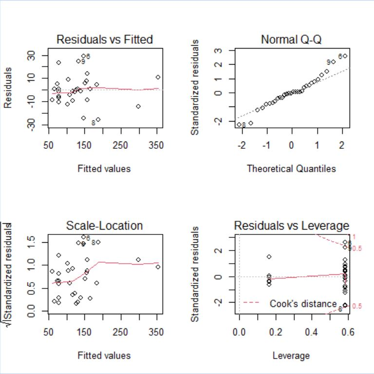
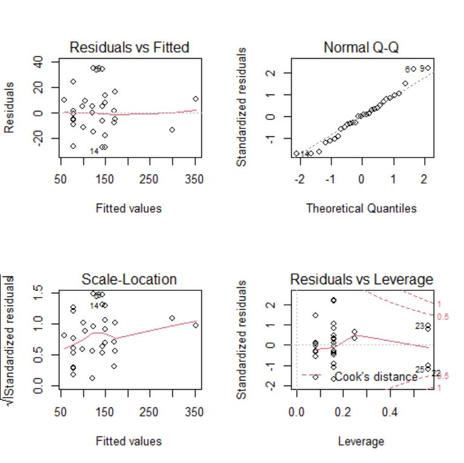
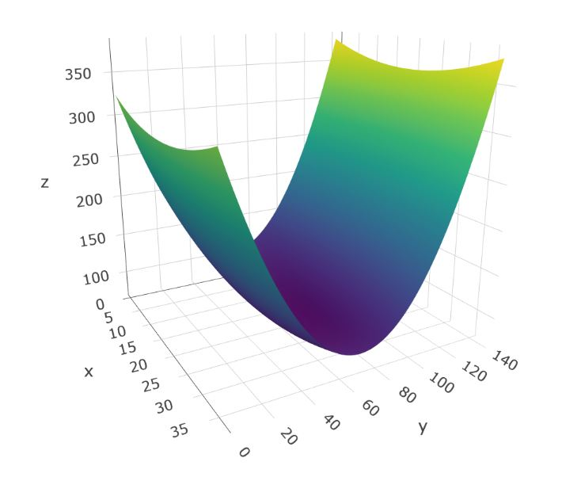

Response Optimization
Multivariable Linear Regression Modeling in R
All the analysis for this project was performed using R and the following libraries: readxl, apaTables, plotly, xlsx, akima,
and MASS. The data for this regression analysis was collected based on a response surface DOE that had been provided to the
client in a previous project. All client-specific information has been altered for confidentiality reasons, including the
variable names and data.
Initial Model
| Predictor | Coeff | P-Value |
|---|---|---|
| Intercept | 117.4 | 0.0000 |
| X1 | 2.055 | 0.1725 |
| X2 | -3.341 | 0.0000 |
| X3 | -0.9998 | 0.4036 |
| X4 | 3.025 | 0.2252 |
| I(X1^2) | 0.03794 | 0.5344 |
| I(X2^2) | 0.05060 | 0.0000 |
| I(X3^2) | 0.07057 | 0.0920 |
| I(X4^2) | -0.1446 | 0.3965 |
| X1:X2 | 0.01157 | 0.5000 |
| X1:X3 | -0.05337 | 0.4126 |
| X1:X4 | -0.2526 | 0.0713 |
| X2:X3 | 0.01051 | 0.4506 |
| X2:X4 | 0.00067 | 0.9812 |
| X3:X4 | -0.07363 | 0.4961 |
client_data <- read_excel("Client_DOE.xlsx", sheet="Yield" )
lm.O1=lm(O1 ~ (X1 + X2 + X3 + X4)^2 + I(X1^2) + I(X2^2) + I(X3^2) + I(X4^2), data=client_data)
summary(lm.O1)
The R^2 value for this model is 0.96, but it is clear the model is overfit.
There are actually a few key hints for this, the first being the non-significant p-values for most of the factors. Normally, the use of
R^2-adj would be an indicator for an over-fit model, but in this case, it is 0.93, which is very close to the R^2. However, if we go through
the effort to calculate R^2-pred, we will see a major drop: 0.81.
pr <- residuals(lm.O1) /(1 - lm.influence(lm.O1)$hat)
PRESS <- sum(pr^2)
O1.anova <- anova(lm.O1)
tss <- sum(O1.anova$"Sum Sq")
R2P <- 1 - PRESS/(tss)
R2P

One can also look at the residuals for an indication of an issue. Here, there is a bit of a challenge, as there are only 30 measurements total. This can make it difficult to assess normality with high levels of confidence, but in this case the normality does appear to be somewhat off. Similarly, the residuals vs fits graph looks like it is increasing here, but this could be due entirely to chance. There are only two values that fit greater than 200 (as expected with a response surface design), and these two are a little high, but with only two it's hard to tell.
par(mfrow = c(2, 2))
plot(lm.O1)
Final Model
| Predictor | Coeff | P-Value |
|---|---|---|
| Intercept | 122.6 | 0.0000 |
| X1 | 2.15 | 0.0008 |
| X2 | -3.16 | 0.0000 |
| X3 | -1.38 | 0.0754 |
| I(X2^2) | 0.05 | 0.0000 |
| I(X3^3) | 0.07 | 0.0539 |
| X1:X4 | -0.17 | 0.0368 |
With this new model, you can see that all of the p-values are now significant. Additionally, our R^2 is now 0.95, only a 0.01 drop. Our R^2-pred, however, is now 0.91, a 0.1 increase.
step.O1 = stepAIC(lm.O1, direction = "both", trace = FALSE)
summary(step.O1)
pr.step <- residuals(step.O1) /(1 - lm.influence(step.O1)$hat)
PRESS <- sum(pr.step^2)
step.anova <- anova(step.O1)
tss <- sum(step.anova$"Sum Sq")
R2P <- 1 - PRESS/(tss)
R2P

The residuals plots for this model are a slight improvement over the initial one. The residuals are more normal, though they do appear to trail off
at the edges still. The vs fit chart still trails upward, but again, that is likley due to only having two higher-fitted measurements.
Several iterations of the final model were attempted to see if these defects in the model could be negated. However, none of them really improved any of
these charts. And so, either there are missing components that need to be understood in order to fully understand the model, or these slight deviations
are a side effect of the small sample size.
par(mfrow = c(2, 2))
plot(step.O1)
3D Surface
3D Surface plots are not always the best way to summarize regression models, mainly because only two factors can be plotted at one time. In this case, I am showing X2 (y) and X3 (x), so the impact of X1 is not apparent. However, there is one very important use for providing these plots. In the model, X3 has a larger coefficient for its squared term than X2, indicating that X3 is at least as useful if not more useful than X2 for controlling the output. However, the coefficient does not take into consideration the design space. This response surface design covered the full range of X2 and X3 settings (they actually covered a wider range than the normal window with the axial points). X2 has a much larger design range than X3, which is very apparent in this surface plot. Although X3 has a slightly higher coefficient, it has a fourth of the design space. Therefore, although X3 has the higher coefficient, X2 is a much more useful lever for controlling the output.
X1_C = 7.5
X2_V = -35:105
X3_V = -9.25:27.75
X4_C = 4.5
pred_func = function(x2, x3) predict(step.O1, newdata = data.frame(X1 = X1_C, X2 = x2, X3 = x3, X4 = X4_C))
pred_mat = outer(X2_V, X3_V, FUN = pred_func)
O1_surface = plot_ly(z = pred_mat, type = "surface")
O1_surface

A similar conclusion can be made with X1 vs X2. X2 is much more useful for controlling the output than X1
X1_V = -7.5:22.5
X2_V = -35:105
X3_C = 9.25
X4_C = 4.5
pred_func = function(x1, x2) predict(step.O1, newdata = data.frame(X1 = x1, X2 = x2, X3 = X3_C, X4 = X4_C))
pred_mat = outer(X1_V, X2_V, FUN = pred_func)
O1_surface = plot_ly(z = pred_mat, type = "surface")
O1_surface